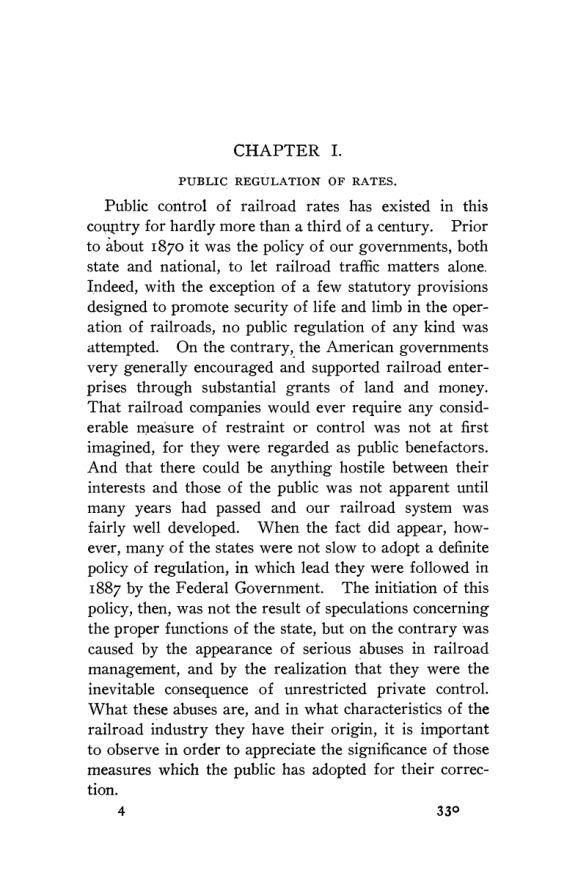

Smalley, 1906: os tribunais e o controle da tarifa ferroviária
Leitura: 9 min
Em 1906, Harrison S. Smalley examinou como as decisões da Suprema Corte americana passaram a limitar as tarifas fixadas pelas comissões ferroviárias estaduais e propôs um modo de contornar o impasse.


Em 26 de agosto de 1897, a comissão ferroviária de Dakota do Sul publicou uma tabela de tarifas que entraria em vigor em 15 de setembro. No dia seguinte, várias ferrovias foram à Circuit Court federal pedir sua suspensão, e a liminar foi concedida. Em julho de 1898, o tribunal deu razão à comissão; a ferrovia St. Paul recorreu, e a Suprema Corte manteve a suspensão enquanto o caso tramitava. O decreto final só veio em agosto de 1901.
O caso é o exemplo central de Railroad Rate Control in Its Legal Aspects, de Harrison Standish Smalley, instrutor de economia política na University of Michigan. O tema é a doutrina da revisão judicial: o princípio de que os tribunais podem examinar tarifas fixadas por comissões e barrar as que julgarem não razoáveis. O autor escreve em 14 de abril de 1906, quando lhe parece provável que o Congresso aprove em breve uma lei federal de tarifas.
Por que regular tarifas de ferrovia?
Smalley começa pela economia do setor. Até cerca de 1870, os governos americanos não interferiam nas tarifas. Os males que motivaram a regulação eram discriminação, sobretudo por abatimentos secretos, extorsão onde não havia concorrência e instabilidade de preços. A causa, para o autor, está na estrutura de custos: as despesas crescem pouco quando o tráfego cresce muito, e é impossível saber quanto custa um serviço específico. Sem conhecer o piso, o gerente de tráfego aceita carga a quase qualquer preço.
O direito de regular foi firmado nos Granger Cases, oito processos decididos pela Suprema Corte em 1876. A ferrovia, disse a Corte, é negócio público: a empresa é transportadora comum e a linha é estrada pública. Nos mesmos casos, a Corte recusou aos tribunais o papel de rever o valor da tarifa. Contra abusos dos legisladores, escreveu o Chief Justice Waite em Munn v. Illinois:
“o povo deve recorrer às urnas, não aos tribunais” (“the people must resort to the polls, not to the courts”)
Como a Corte mudou de posição?
Em 1886, Waite incluiu numa decisão uma ressalva: o poder de regular não é poder de destruir. Seguiram-se cinco anos de incerteza. A virada veio em 24 de março de 1890, em Chicago, Milwaukee and St. Paul R. Co. v. Minnesota, uma disputa sobre tarifas de transporte de leite. O juiz Blatchford, pela maioria, decidiu que a razoabilidade da tarifa exige investigação judicial, com base na 14ª Emenda. O juiz Bradley divergiu, acompanhado por Gray e Lamar. Smalley observa que Blatchford não citou precedente além da ressalva de 1886:
“Sua doutrina era direito novo, feito do nada.” (“His doctrine was new law, freshly made out of whole cloth.”)
A doutrina foi elaborada nos Reagan cases, do Texas, em 1894, e em Smyth v. Ames, de 1898, que derrubou a lei de tarifas máximas de Nebraska. Ali a Corte fixou que a ferrovia tem direito a um retorno justo sobre o valor razoável da propriedade, não sobre o capital nominal, que pode estar inflado. Entre os elementos desse valor, listou o custo original, o custo atual, o valor de mercado dos títulos, a capacidade de ganho sob as tarifas e as despesas operacionais. Em nota, Smalley aponta que os dois últimos já entram no cálculo do lucro e não podem entrar também na base sobre a qual ele é medido.
A renda acima do razoável não é propriedade?
A crítica central do livro é jurídica, mas tem conteúdo econômico. Pela doutrina, o Estado pode reduzir a renda da ferrovia até o ponto da renda razoável; abaixo dele, a redução é tomada de propriedade e exige indenização. Para Smalley, dividir a renda em uma parte que é propriedade e outra que não é constitui ficção jurídica. O erro, a seu ver, foi tratar o controle de tarifas como desapropriação, quando a Corte dizia apoiá-lo no poder de polícia. Leis que obrigam a instalar engates automáticos também reduzem a renda, e nenhuma ferrovia pode contestá-las por isso. O teste, propõe, deveria ser o interesse público.
Como o tribunal estimava o efeito da tarifa?
Os tribunais supunham que o tráfego não mudaria com a tarifa nova e projetavam a receita futura reduzindo a receita passada na mesma proporção do corte sobre a tarifa de tabela. Smalley vê dois vieses. O primeiro ignora que tarifa menor costuma atrair mais carga, ponto admitido pelo próprio advogado das ferrovias em Smyth v. Ames. O segundo ignora que a receita passada foi obtida com tarifas efetivas abaixo das de tabela, por causa de abatimentos e discriminações. Assim, quanto mais a ferrovia violou a lei, maior parece o corte e mais forte fica seu caso.
Por que a comissão não conseguia aplicar a tarifa?
O segundo efeito da doutrina recai sobre a execução. Os tribunais concediam liminares com base em demonstração apenas aparente, apesar da regra de que as leis se presumem constitucionais. A suspensão obtida por poucas ferrovias liberava as demais, porque nenhuma comissão aplicaria uma tabela geral a só parte delas. Faltava dinheiro: em Dakota do Sul, o caso da St. Paul esgotou a verba de litígio, completada com US$ 1.561,27 de fontes privadas. E as ferrovias tinham incentivo para mostrar pouco perante a comissão e guardar os melhores argumentos para o tribunal.
O resultado, diz o autor, é que a comissão não ajusta tarifas às condições da economia e a instabilidade aumenta. Ele transcreve cartas de comissões estaduais: uma conta ter feito acordo em dois processos por medo da demora; outra diz convidar a revisão judicial e só se queixar do tempo até a decisão final.
Que saídas o autor propõe?
Uma emenda constitucional é descartada como inviável. A proposta principal é de indenização: a tarifa da comissão entra em vigor de imediato; depois de talvez um ano, a ferrovia pode processar o Estado perante um tribunal especial, formado em parte por juristas e em parte por pessoas com experiência em negócios ou administração pública. Se provar que não obteve renda razoável, recebe a perda do Tesouro estadual, e o tribunal aponta o defeito da tarifa sem suspendê-la. O efeito observado substitui a projeção. O próprio autor chama o plano de paliativo.
Entre as sugestões menores estão legalizar os pools e a fusão de linhas paralelas, para reduzir a concorrência que força a discriminação, e acelerar os julgamentos. A caução para devolver a diferença aos embarcadores esbarra na demora de quatro ou cinco anos até a decisão final:
“Um negócio arruinado não se restaura com a mera transferência de uma soma de dinheiro.” (“A business ruined is not restored by the mere transfer of a sum of money.”)
A última sugestão é a moderação. Em Smyth v. Ames, a lei de Nebraska cortava as tarifas em 29,5%, e a Corte examinou sete ferrovias, cada uma com dados de três anos. Smalley refaz a conta com os números da própria decisão.
Na minha leitura
Na minha leitura, o capítulo mais durável é o de método. Supor tráfego constante e aplicar o corte percentual à receita passada produz uma estimativa enviesada, sempre no mesmo sentido. É uma crítica que hoje se faria em termos de elasticidade-preço da demanda e de diferença entre preço de tabela e preço efetivo. A nota sobre o valor razoável toca um problema que nunca saiu da regulação: se a base depende da receita, e a receita depende da tarifa, a base não pode julgar a tarifa sem circularidade.
A proposta de indenização troca a projeção pela observação, mas, na minha leitura, desloca a dificuldade em vez de eliminá-la. Saber quanto a ferrovia perdeu por causa da tarifa exige estimar o que teria ganhado sem ela, de novo um contrafactual, e o Tesouro passa a carregar o risco de erro da comissão. O dilema de fundo é o de qualquer regulação de preços: quem decide, com que informação e quem paga quando a decisão erra.
Glossário
- Revisão judicial (judicial review)
- poder dos tribunais de examinar tarifas fixadas por lei ou comissão e suspender as que considerem não razoáveis.
- Comissão ferroviária
- órgão estadual com poder, delegado pelo legislativo, de supervisionar ferrovias e, em muitos estados, fixar tarifas.
- Transportadora comum (common carrier)
- empresa obrigada a servir a todos em termos iguais e razoáveis.
- Obiter dictum
- observação de um juiz que não é necessária para decidir o caso e, por isso, não tem força de precedente.
- Poder de polícia
- poder do Estado de regular atividades privadas em nome da segurança, da saúde e do bem-estar público.
- Desapropriação (eminent domain)
- poder do Estado de tomar propriedade privada para uso público, mediante justa indenização.
- Liminar (temporary injunction)
- ordem judicial provisória que suspende um ato até o julgamento final.
- Prima facie
- à primeira vista; demonstração aparente, ainda não confirmada por instrução completa.
- Valor razoável (fair value)
- base sobre a qual se calcula o retorno permitido à ferrovia em Smyth v. Ames.
- Pool
- acordo entre ferrovias concorrentes para dividir tráfego ou receitas.
- Tonelada-milha
- uma tonelada de carga transportada por uma milha, unidade de medida do tráfego.
Fontes
- Railroad Rate Control in Its Legal Aspects: A Study of the Effect of Judicial Decisions Upon Public Regulation of Railroad Rates (pp. 4–147). JSTOR · Internet Archive (PDF)
- Sumário da edição no JSTOR: Publications of the American Economic Association, 3ª série, vol. 7, nº 2.
Documento em domínio público (EUA, publicado antes de 1931), via JSTOR Early Journal Content e Internet Archive. Resumo e comentário do autor deste site, sem afiliação com a American Economic Association. Encontrou um erro? Escreva: a correção é publicada no próprio texto, com data.
← Nº 77 · Baltimore, 1905: o amor à riqueza e o serviço público Nº 79 · Gryzanovski, 1906: até onde vai a autoridade dos números →